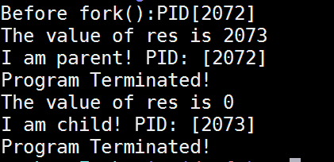

Distinguish Parent and Child Process
Before we discuss in details, let's try the following code:
/* LetsFork/fork2.c */
#include <stdio.h>
#include <unistd.h>
#include <sys/types.h>
int main(int argc,char* argv[])
{
int res;
printf("Before fork():PID[%d]\n",getpid());
res = fork();
printf("The value of res is %d\n",res);
if(res == 0)
{
printf("I am child! PID: [%d]\n",getpid());
}
else
{
printf("I am parent! PID: [%d]\n",getpid());
}
printf("Program Terminated!\n");
return 0;
}
The output is as follows:

The original process has the PID 2072. After res = fork();, the process splits into two, the parent and child.
For the parent, the return value of fork() is the PID of the new child. However, for the child, the return value is 0.
By using a condition, we can distinguish parent and child.